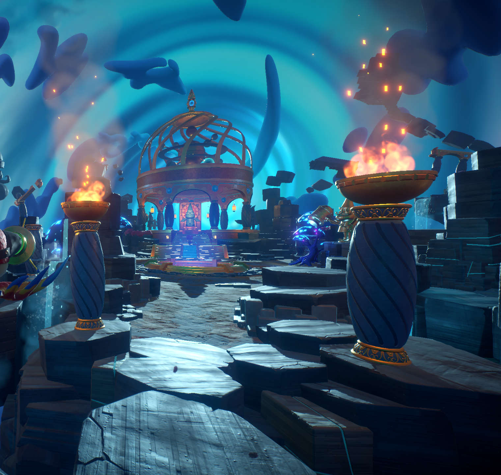

After exploring the amazing world of zomburbia, zombopolis and more you may test yourself via the trials of gnomus only the most cunning, daring and intelligent zombies may enter. These trials provide visitors with an amazing time themed view, shiny gold timey time statues to take pictures of, and if catches your eye you may see our amazing and wonderfully crafted trial doors. Oh, you can also go through them. Not only that but we also have gnome statues and snowglobe collectable to be found placed everywhere and anywhere in here avaliable to all who find so get grabbin!
Mysterious gate of time beware entry!

Never thought I would be able to see the end of time, pure disbelief once entering and the time there was so unforgettable. There was almost something that made brainz seem second rate.
The Trials
Beginning the trials of gnomus you must make your way to the green gate which presents you with the first trial these are optional of course if you desire to only see the time themed sites but for those truly brave enough you must enter through here, each trial provides any top zombie with an entire location with one major puzzle to solve with multiple steps completing each trial grants you with a key to choose between any of the other 3 trials presented.
In order to unlock the hardest, baddest, CRAAAZIEST trial you must complete all of the trials at least once and you will be given the rainbow key to access the final trial.
Whats the point of doing them? you obtain the one thing any zombie desires, BRAINZ!!
Trial of Balance: This very narrow trial will test you balance throughout this trial you will be making your way to the end of the course on very narrow paths,
it may seem simple and easy at first but you will soon be met with turrets, cannons, and hammers ready to make it really difficult to stay on course.
Be not afraid! since you're a zombie you won't be harmed, but failing this trial of any of them listing from here on will transport you back to the start so no shortcuts or cheating!
Trial of Hot Doom: Spicy! this trial is all about avoiding the very steaming hot tiles, each section of this trial has platforms that have a spicy kick to them it's pretty simple avoid the hot tiles and get to the end!
Watchout tho it may be a simple task but a surprise awaits you once you go further in!
Trial of Recollection: This trial tests the amazing memory of our top zombies step on the platforms in the correct order provided to you to get through
tho the name of this trial does mean you get one look and thats it!
Trial of Shooty Shooty: This one is our personal favorite it's a trial all about aiming, remembering a bit and obviously accuracy you shoot the correct targets based off the trials wishes and you're done it will mix it up for ya
and may even include hidden or multiple of the target you need to hit so alwyas be on your toes!
Rainbow Trial: If you make it this far thats really impressive, you got the brains and we got the challenge and heres the final one!
Zomboss tests you're mettle with one giant plant boss to eliminate in order to obtain your brain and reward. this one combines all your time
with the other trials while you fight with some meddlesome plants!
Note: this one is very challenging so you may come back and visit some other time to prepare your big brain or simply if you wish to leave and
return later a neat purple badge awaits the exist for at least completing 4 trials we salute you top zombie!
Recommendations and Tips for visitors!
Good walking shoes! you will be exploring alot if you at least wish to look around the trials and environment to sight see so shoes
you're comfortable in will be amazing here.
Going through would take way too long, so Zomboss added portals everywhere to minimize walking only for zombies who really want to cut to the chase and get those trials done!
but these things use a lot of power and bursts of light so good sunglasses and sunscreen will keep you're body and eyes intact as you fast travel.
Puzzles are SCATTERED everywhere here so a good working mind is very much recommended tho you're a zombie and your brain isn't exactly intact we do provide prototype brainz
to use to keep your mind sharp for these puzzle!
Puzzles arent the only thing we have here we also have collectables all over the place too! we have golden statues and snowglobes around for any to find a keep and some are going to have a more keen eye than others so a good bag or some sort of storage for those
shiny trinkets will make things easier on those rotting arms of yours!